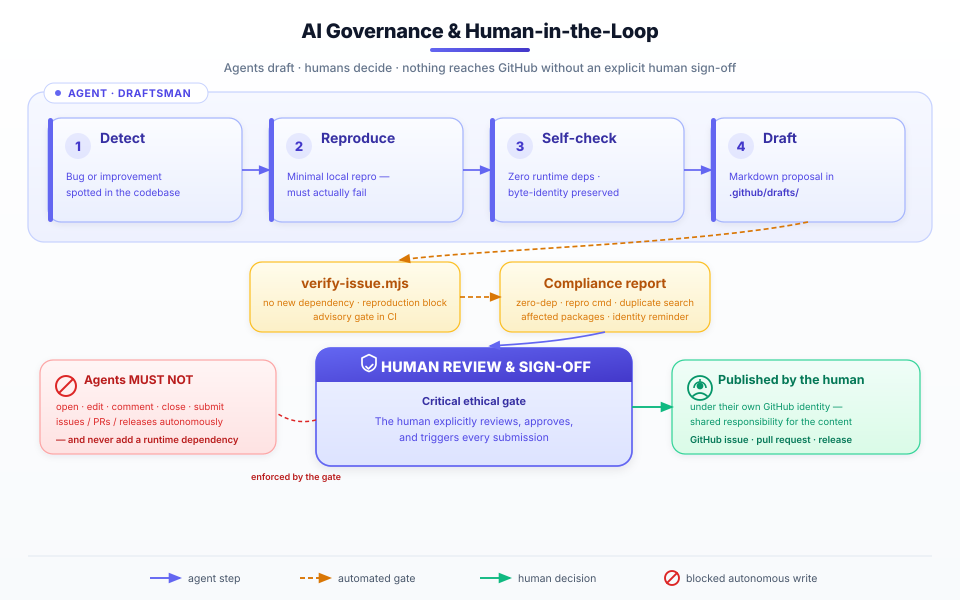

AI governance & human-in-the-loop
Shipped in v1.5.0. pdfnative is developed with the help of AI coding agents — and it governs them. This repository ships a machine-readable governance contract and a human-in-the-loop (HITL) protocol that keep AI agents in an advisory role: they may draft proposals, but a human always reviews, approves, and submits. Nothing reaches GitHub autonomously.
This page exists for transparency. If you evaluate pdfnative for production, you should be able to see exactly how AI participates in its maintenance — and where the hard limits are.

Why this exists#
Modern open-source projects increasingly receive AI-generated issues and pull requests. Unbounded, that creates noise, low-signal duplicates, and — worst of all — a diffusion of responsibility: who actually stands behind this change?
pdfnative's answer is a written, enforceable contract:
- Agents are draftsmen, never submitters. Their authority ends at producing a local markdown draft plus a compliance report.
- A human is always in the loop. A person explicitly reviews, approves, and triggers every issue, comment, pull request, and release.
- Identity integrity. Anything submitted is published under the human's own GitHub identity — so a human always shares responsibility for the content.
The two source-of-truth files live in the repository and are loaded by any agent that scans project configuration on start-up:
- .github/AGENT_RULES.md — the human-and-agent-readable protocol.
- .github/ai-governance.json — the machine-readable contract.
The six mandatory rules#
Every agent (Copilot, Cursor, Claude, Antigravity, Aider, Cline, Windsurf, Gemini CLI, …) must satisfy all six before proposing anything:
- Zero runtime dependencies. Never suggest, add, or import an external npm package for a runtime feature. This is a non-negotiable blocker.
- No duplicates. Search open and closed issues/PRs first. Surface a matching one instead of opening a new report.
- Local validation & reproduction. Create and execute a minimal reproduction. If it does not fail or show a measurable regression, do not propose an issue.
- Byte-identity awareness. For changes touching the builders, confirm the change is additive and existing output stays byte-identical — or report any intentional byte change.
- Human-in-the-loop gate (ethics). Agents are strictly forbidden from creating, editing, or submitting issues, comments, PRs, or releases via any tool or API. They produce a local draft in .github/drafts/ and present it with a compliance report.
- Identity integrity. The agent reminds the user that anything submitted is published under their GitHub identity and that they share responsibility.
The human-in-the-loop workflow#
[Agent detects bug/improvement]
│
▼
[Local validation & reproduction]
│
▼
[Verify zero-dependency constraint]
│
▼
[Generate draft markdown in .github/drafts/]
│
▼
[Present draft + compliance report to user]
│
▼
[User explicitly reviews & signs off] ◄─── CRITICAL ETHICAL GATE
│
▼
[User manually submits or approves the API call]
The agent's job ends at the draft. The human gate is the only path from a proposal to a published issue, PR, or release.
The compliance report#
Every draft must be accompanied by a structured compliance report so the human can review with full context. At minimum it contains:
| Field | What it confirms |
|---|---|
| Zero-dependency confirmed | no new runtime dependency introduced |
| Reproduction command | the exact command the agent ran |
| Reproduction result | the observed failure or regression |
| Duplicate search | what was searched and what was found |
| Affected packages | which monorepo packages are impacted |
| Identity reminder shown | the user was told it publishes under their name |
Validate a draft before presenting it#
A small, dependency-free verifier checks a draft mechanically:
node scripts/verify-issue.mjs .github/drafts/my-issue.md
# or via the npm script
npm run verify:issue .github/drafts/my-issue.md
It fails when the draft proposes an external dependency or omits a reproduction
code block. A passing check is necessary but not sufficient — the human
review gate above always applies. The verifier is advisory in CI and exposes a
pure validateIssueMarkdown(content) function so its logic is unit-tested.
The machine-readable contract#
.github/ai-governance.json encodes the policy so agents that scan repository configuration can honour it without parsing prose. Key fields:
{
"policy": {
"automatic_issue_reporting": false,
"runtime_dependencies_allowed": false,
"human_in_the_loop_mandatory": true,
"autonomous_github_writes_allowed": false,
"required_issue_fields": [
"minimal_reproduction", "environment", "expected_behavior"
]
},
"human_in_the_loop": {
"role_of_agent": "draftsman",
"gate": "A human MUST explicitly review, sign off on, and trigger any GitHub issue, comment, PR, or release.",
"draft_location": ".github/drafts/"
}
}
The contract applies_to the whole ecosystem — pdfnative, pdfnative-cli,
pdfnative-mcp, and pdfnative-react.
Since pdfnative-mcp 1.6.0, that package's mirror of the charter also states the single permitted egress class: the server makes no outbound request by default, and the only network calls it can ever perform go to the TSA / OCSP / CRL endpoints the operator configures for the PAdES tools — never to a URL taken from a tool argument, and never to GitHub. "No GitHub write path" and "no telemetry" remain absolute.
What agents must never do#
- Add a runtime dependency.
- Open, edit, label, close, or comment on issues/PRs autonomously.
- Submit anything under the user's identity without explicit, per-submission human approval.
- Bypass local validation or duplicate checks.
In short#
pdfnative treats AI as a force multiplier for humans, not a replacement for human judgement. Agents accelerate the tedious parts — reproduction, drafting, compliance checking — while every externally visible action stays under deliberate human control. That is the standard we hold ourselves to, and we publish it so you can hold us to it too.